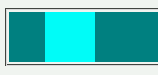
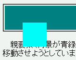

高さが明示されていない要素の子孫要素を相対配置した場合、topプロパティを%値で指定すると無視される。
<div style="background: teal;"> <div style="position:relative; top:5%; left:5%; width:50px; height:50px; background:aqua;"> </div> </div>
親要素（背景が青緑色）では高さを明示していません。子要素（背景が空色）は通常配置から右下方向に5%移動させようとしています。
N6.2.3での表示（標準モード）
WinIE6.0での表示（標準モード）
親要素の高さが明示されていないとき、値が%単位で指定されたtopプロパティは無視されます。それ以外の単位（pxやemなど）で指定されている場合は解釈されます。
N6.2.3、Moz1.0ともに正しい解釈をしています。